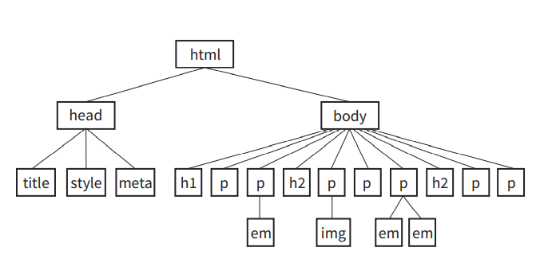

CSS is a language used to give styles to HTML documents, It handles the presentation of your webpage to users, it gives the developer a lot of power to determine how a particular HTML element is displayed to the users for example: the color of the element, it's background color, the spaces around the element to other element, it's border, the position it occupies and so on.
There have been different versions of CSS but the current version that web developers are using is CSS3
NOTE: we would be talking about the major concept of CSS and it's syntax and everything that gets you up and running with basic CSS from Applying CSS to your page, how to select elements, using of the id and class attributes, pseudo-elements, precedence, inhertiance, CSS comments, CSS Box model but we won't really be introducing you to some other styles and not to worry, we would provide links to website that teaches them more verbose.
Writing the rules
A stylesheet is made up of one or more style instrutions (called styles rules) that is capable of defining how elements on the page is displayed.
Every style rules in the stylesheet basically select this element and give it the following style to alter it's look.
In CSS, the two main sections on a rule are:
The Selector: used to identifies the element or elements to be affected.
The Declarations: This provides the rules to be followed and displayed on the element selected. The declarations itself is made up of a property and its value which is seperated with a colon(:) and a declaration is closed with a semi colon(;)
p{color: red;}
In the illustration above, this is interpreted as follows, the p is the selector which is used to selects paragraph tag in the document
Every thing in the curly brackets{ } is referred to as the declaration while the property in this example is color and the value is red
We can have more than one declaration in those curly brackets and this time we would called a declaration block.
How to apply the css to the document
There are three way to apply CSS to your webpage:
External Stylesheet:
An External stylesheet is a text-only file contained our css style rules in them, this file must always go with a .css suffix and they are not permiitted to contain any HTML tags.
The file can then to be used to style our HTML documents by linking it to our HTML file(using the link tag) or imported our HTML document.
External stylesheets are most preferred and most use out of the three other methods cause one css file can be used to style as many file as possible and they seperate your HTML code from presentational (CSS) code
Using the link element to link css with HTML
The link element defines a relationship between the current document and other resource, the link goes within the head element and must contains two attributes.
rel="stylesheet"
Therel attribute tells the browser that the type of relationship that the linked document has with the current document and with CSS, the value of the rel attribute for css is always stylesheet
href="url of css file "
The href attribute is provides the location to the CSS file
<head>
This illustration above shows a css file named style.css that linked to an HTML documnet using the link element in the head element
<link rel="stylesheet" href ="style.css">
</head>
Using @import to linked css with HTML
You can also use the @import statement to provide the css file to HTML. if you use this method, you place your @import statement in a style element.
<head>
<style>
@import url("style.css");
</style>
</head>
This method is not the most common but can be used if you want to import a particular screen sizes using some media queries along side with it.
Embedded Stylesheet:
Embedded Stylesheets is used when the css styles rules are placed within the style element in the head but the downside of this is that it can only be on that particular document alone.
<head>
<style>
style rules go here
</style>
</head>
Inline Styles:
Inline styles allow you to be able to apply properties and values to a single element by using the style attribute in the element itself
<h1 style = "color:red"> heading one </h1>
To add multiple styles, seperate them with semi colons(;)
<h1 style = "color:red; font-size:120%;"> heading one </h1>
Inline styles may come in handy if you want to override some other styles that have applied with exeternal or embedded stylesheets but Inline styles are highly problematic cause they interfere with content of the page and does should be avoided.
CSS Comments
CSS allows for developers to leave comments in their code, this is highly helpful if you are collaborating with someone on a project or even if you are going to come back to the code latter and sometimes you can use to test different styles by commenting and uncommenting them as needed.
Content between /* and */ will be ignored when stylesheets are parsed and you can leave comments at anywhere in the code and they can span muitiple lines
/*This is a comment and I am ignored
when stylesheets are parsed*/
CSS Selectors
In understanding CSS, we must understand its syntax and also in understanding its syntax and using it to style our page, we most importantly need to understand what CSS selectors are and the different type of selectors there are and the ways of using them to style our page.
CSS selectors are used to select nodes/element from the DOM and thus styling them and there are a number of selectors and let jumpin to understanding them.
Element Type selector:
The element type selector are the most basic and type of selector we are. for example: if we want to select paragraphs on our page and give them a color of blue, we can use the element selector(p) and give a color of blue to them.
p {color: blue;}
This would go into the page then look for all elements that are paragraphs and give them color of blue.
Grouped Selectors:
Most times, we would want to apply same style to a couple of elements on our page, we could do this more efficiently by grouping our selectors in one style rule declaration by seperating them then with a comma(,)
h1,h2,p,img{
margin:20px;
}
This style rule above would apply a margin of 20px to all the element listed above (h1,h2,p,img)
When we use grouped selectors, it would make furture possible edits more efficient and less time consuming.
Contextual Selectors
In the DOM, we consists elements to be Parents or Children because some elements contains other elements while some elements are contained in other elements For example: The body element can be considered as a parent because it will contain other element that form the page and we could aslo consider the body element as a child cause it is contained in the html element and this gives rise to other complex relationship between element.
Descendent Selectors
Descendent Selectors targets element contained another element, Descendent selector is an example of a contextual selctors because it selects elements based on its context or relationship to another element.
Descendent selector are indicted in a list seperated by a character space
p em {
font-size:120%
}
This example targets emphasized text (em) that are only contain in a paragraph (p), Other emphasized text contains in other element that not in the p would not be affected.
Descendent selectors can be grouped in a comma-seperated list and it is possible to nest descendent selectors several layers deep.
ul li a {text-decoration: none;}
This example selects an anchor a tags that are contained in a list-ltems li and in an unordered list ul
Child Selectors
Child selector is similar to descendent selector but child selector only selects direct children of a given element. They are indicated with a greater-than symbol(>) and they are contextual selectors
p > em {font-size:120%;}
This example would select emphasized text that are only directly contained in a p element.
Next-Sibling Selectors
The next-sibling selector selects element that comes directly after another element with the same parent. it is indicated with a plus (+) sign
h2+p{font-family:serif;}
This rule above would style paragraphs that follow an h2
Subsequent-sibling selectors
The subsequent-sibling selector selects element that shares same parent with the specified element and occurs after it in the source order, they need not follow each other directly it is indicated with a (~) sign
h1 ~ h2{font-weight:normal;}
The following rule selects any h2 that both shares a parent element (such as section or article) with an h1 appears after it in the document.
ID Selectors
We can assign Id attribute to element on our page and then access them in CSS to style them. The ID attribute is unique and should only be used once on our HTML page, ID selectors allow us to target elements with their ID values. The hash or pound (#) symbol is used to identifed an id selectors in CSS we can use ID selectors as part of contextual selector
HTML Mark up
<p id="MyPara">This is my first paragraphs</p>
CSS
#MyPara{
color:blue;
In the example above, we see how the id attribute was used in HTML markup which was later referced through its value with hash # symbol to identify it as an ID selector and give the following style.
background-color:red
}
Class Selectors
We can group elements on our page into a conceptual group by using the class attribute and unlike ID attribute , different elements can shared same class name
To target elements belonging to the same class we use the class selector. Class selectors are indicated with a period (.) at the beginning of the selector.
HTML markup
<p class="MyClass">lovely</p>
<div class="MyClass">I am learning CSS</div>
CSS
.MyClass {font-size: 1em;}
In the example above, different elements were grouped in a class called MyClass aand was access by CSS following the class name with a period (.)
We can also be more precise about what we want to styles with CSS
P.MyClass{color: red;}
This would style only paragraphs with the class of MyClass as with this example
The Universal Selector
Sometimes we might want to use a properties that would be applied to all elements on the page for example: intialization of margin to zero, setting the box-sizing property to border-box for all elementa, We can achieve this using the universal selector (*)indicated with the asterisk * symbol
*{margin: 0;}
This example above sets all elements on the page to have a margin of zero although this could be overwritten later in the page.
Pseudo-class Selectors
You mostly have noticed that a link has one color when clicked and another color when you revisit that page or maybe you have notice that some element has a particular color at a time then changes color when the mouse cursor moves over it. Thse particular features is possible because the browser keep a track of different states of an element
CSS enables us to give styles to these various states using the Pseudo-class selector. Pseudo-class selectors are indicated by the colon (:) character and they go immediately after an element name
The Syntax
selector:pseudo-class {
property: value;
}
There are a number of Pseudo-classes but it is of great importance to know a few that tends to be used very often, you can also always check out its documentation at MDN web docs
Link Pseudo-classes
We mostly would want to use pseudo-classes on link element as we would keep tracks of user interaction on our links
:link --- Applies a style to unclicked (unvisited) links
:visited --- Applies a style to links that have already been clicked
User action pseudo-classes
We would also be interested in our user's action on our page.
:focus--- Applies when the element is selected and ready for input
:hover--- Applies when the mouse pointer is over the element
:active--- Applies when the element(such as link pr button) is in the process of being clicked or tapped
Pseudo-Element selectors
The Syntaxselector::pseudo-element {
property: value;
}
Pseudo-Elemnent selectots are indicated by a double colon (::) symbol which differentiates them from pseudo-classes.
::first-line
This is a pseudo-element selector that applies style rule to the first line of the specified element but it is limited to the following properties to apply
text-transform word-spacing line-height letter-spacing
::first-letter
This is a Pseudo-Element selector that applies to the first letter of the specified element but linted to the following properties:
text-transform word-spacing line-height letter-spacing
we have some other pseudo-element, we can check them out at MDN web docs
Attribute Selectors
Attribute selectors allow us to select element based on attribute name or values.
element[attribute]
This simple attribute selector allows us to target element based on their attribute name regardless of its value,This attribute selector selects images that have the alt attribute.
img[alt]{border-color:red}
element[attribute ="exact value"]
The exact attribute value selector selects element with a specified value for the attribute, this selects the images with the title attribute having a value of ("I am love")
img[title="I am love"] {border-color:"red"}
element[attribute~="value"]
The partial attribute selector (indicated with a tilde ~) allows us to specify one part of an attribute value, this is able to select the element if it has a title attribute with any part of the value having "I am"
img[title~"I am"]{border-color:red;}
element[attribute|="value"]
The hypen-seperated attribute value selector (indicated with a bar |) targets hypen-seperated values, this selector matches any link that points to a document written in a variation of English language
a[hreflang | = "en"]{color:red;}
element[attribute^ = "first part of the value "]
The beginning substring attribute value selector (indicated with a caret ^), selects elements whose specified attribute values starts in string of characters in the selector, this selects images that have the src attribute and its values beginning with images
img[src^ = "image/"]{border-color:red;}
element[attribute$ ="last part of the value"]
The ending substring attribute value selector (indicated with a dollar sign $) matches element whose specified attribute end in the string of characters in the selector, this selects images that its src attribute values ends with .jpg
img[src$=".jpg"]{border-color:red;}
element[attribute*="any part of the value"]
The arbitrary substring attribute value selector(indicated with an asterisk *) looks for the provided text string in any part of the attribute value specified, this selects an image as long as the src attribute values contains img at any part of it
img[src*="img"]{border-color:red;}
The Big Concepts
While learning CSS, it is important to understand some major concepts as they affect the way CSS behave, sometimes we may find ourselves trying to figure out why a particular styles won't works and various others like this.
The following concepts helps in our debugging and making thing works and hence improving our CSS knowledge
Inhertiance
We all have one or more things we inherted from our parents, it may for instance be our hair colour, the colour of our iris, genetics properties, same applies to HTML elements as they can pass down certain style properties to other elements they contain and this bring us to understanding a document struture.
Document Struture
Every HTML Document would always behave the html element that inturns would contains an head element and the bodyelement , In this analogy, we can consider the html element as a parent to both the head element and the body element, The body element itself would contain certain element like p, div, section which would build a parent-child relationship
All elements contained within another elemen are said to be its descendents,Two elements from the same parents are siblings, only certain properties are inherted and not all

The image above should bulid a mental picture of relationship between elements
Conflicting styles: The Cascade
CSS allows the use of several stylesheets to the same document hence they are bound to conflict for example: a linked CSS may say an h1 should be color red while the embedded CSS says it should be blue then this leads to which style is chosen and this problem comes and gets solved by measuring the style rule to get the weight
Weight is considered based on priority of the style rule source, the specificity of the seletor, and rule order which boils down to the meaing of casade.
The "Cascade" refers to what happens when several sources of style information vie for controls of the elements on a page.
Priority
If we don't apply styles to our webpage, The browser renders its internal stylesheet which is called user agent stylesheet, Our users cann also apply their own styles called user stylesheet which override the default styles in their browser. The author of the webpage can also attached their own stylesheet which override both the user's and user's agent (browser) stylesheet
so in terms of priority, the author's stylesheet has higher precedence than the user's stylesheet followed by user's agent stylesheet
Specificity
There are possibility that conflicts arises in which an element is getting style instrutions from more than one rule for example a rule targets paragraphs and another rule targets paragraphs with an ID of FirstPara. Whwn two style rules conflicts the specificity of selector is used to select the winner (i.e the most specific)
Inline styles are the most specific and will override ID selectors that more specific and override the Class selectors that is more specifc and override individual element selector which is the least specific
Although there is alot that go into the calculation of specificity but the basics of it has been already explained but to know more about it inner details , check out w3.org
The Rule order
When all stylesheet sources have been sorted by priority, there are likely to be conflicts in rules with equal weightsm In this case, the order which the rules is important
The Cascade follows a "last one wins" rule whichever rule appears last has the last say